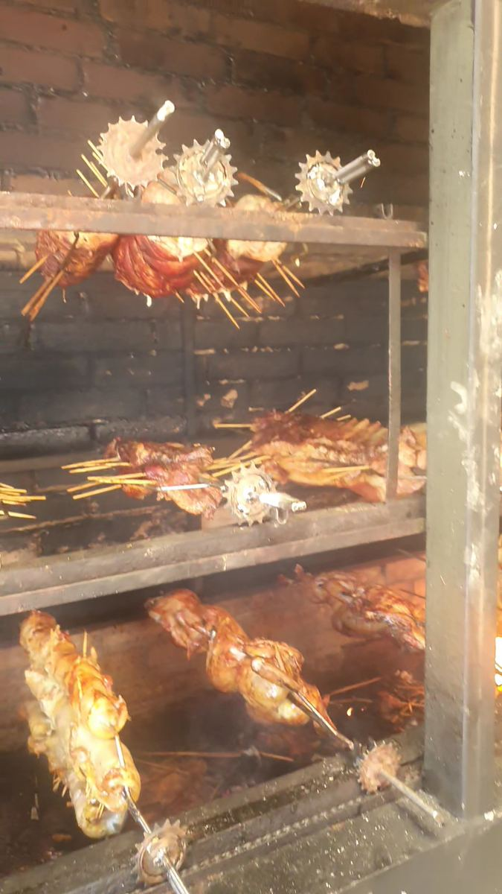
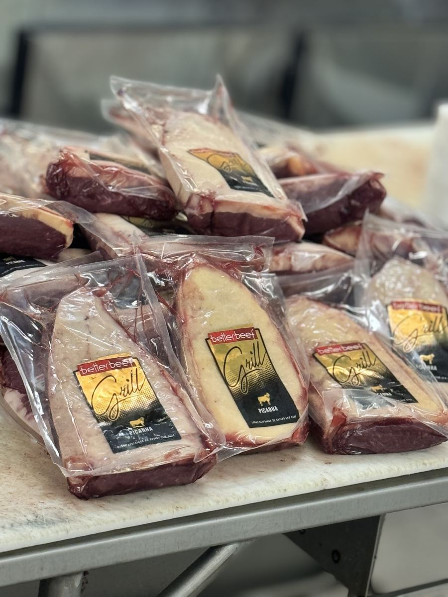
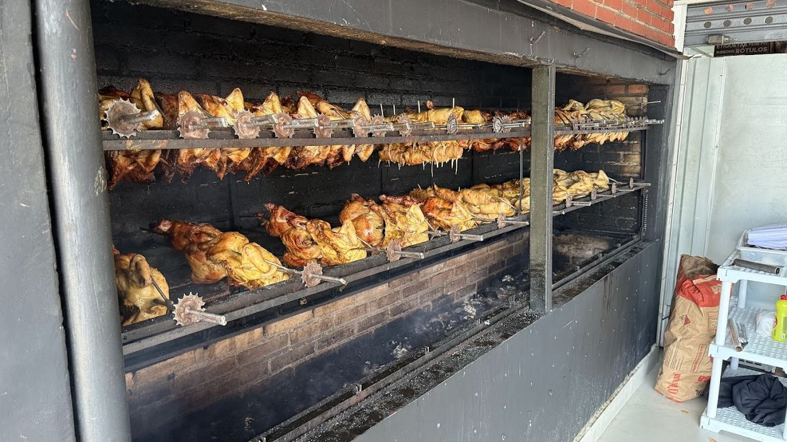
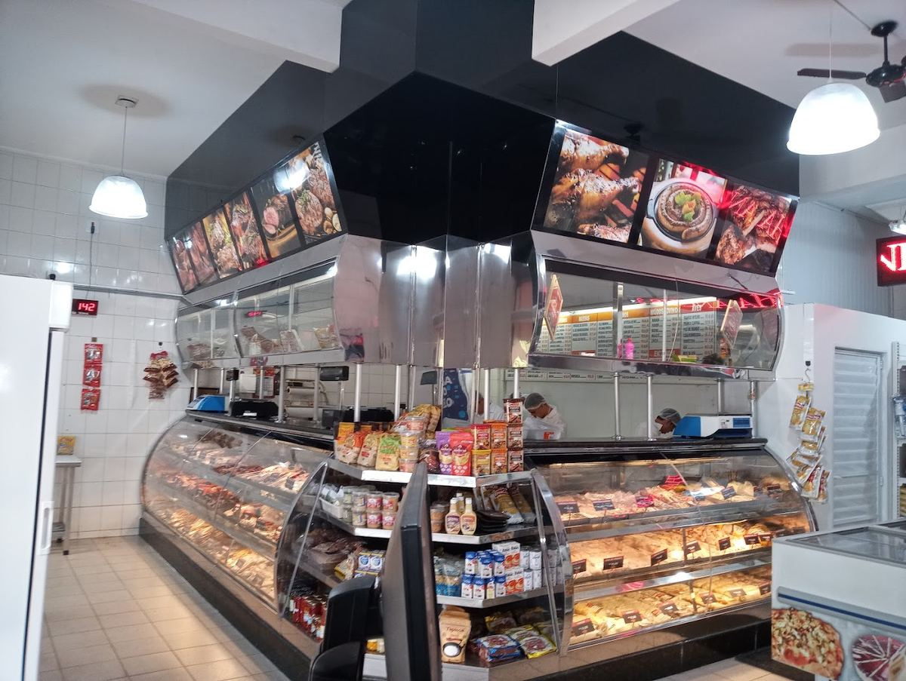
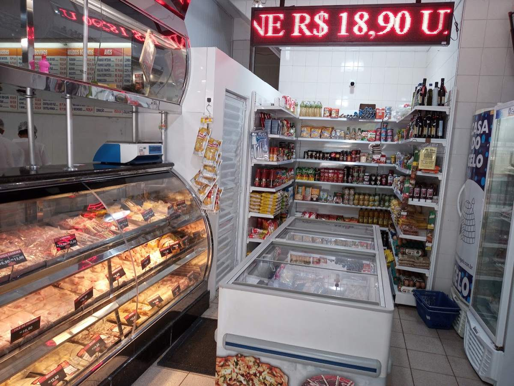
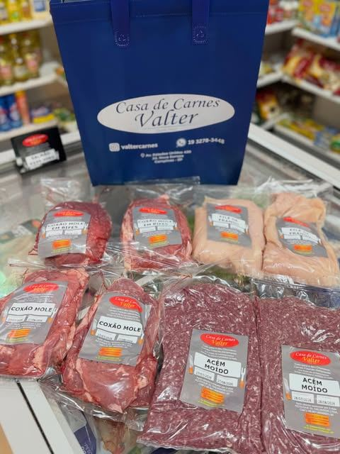
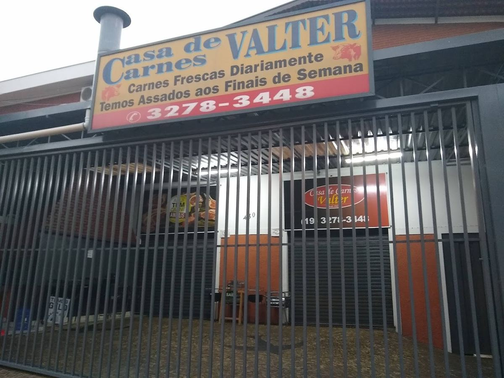

Desde 1982Selo SISP ArtesanalAngus e Wagyu
Carne fresca todo dia e assado no domingo.
Açougue completo, empório e assados na brasa no Jardim Nova Europa. Cortes nobres para o churrasco, carne do dia a dia, espetinhos e hambúrguer artesanal. E a gente coloca no porta-malas.
4,9 ★ com 157 avaliações no Google



No balcão
Cortes nobres e do dia a dia
Tem corte que só se encontra aqui, como contam os clientes.
Picanha AngusA estrela do churrasco.
Ancho e chorizoMarmoreio na medida.
Denver e tomahawkPara impressionar na grelha.
Fraldinha e maminhaClássicos que todo mundo ama.
Short ribsCostela para fazer no bafo.
Cupim recheadoUm dos destaques da casa.
EspetinhosVariados, prontos para a brasa.
Kit hambúrguer"Super completo", dizem os clientes.



SISP
Registro artesanal no S.I.S.P., o serviço de inspeção do Governo do Estado de São Paulo: produção inspecionada, com mais segurança e procedência para a sua família.
Assados no domingo
Reserve e só passe para buscar
No domingo o movimento é grande. Separe seus assados pelo WhatsApp e evite fila.
4,9 · 157 avaliações no Google
Clientes há mais de 30 anos
"Eu e minha família somos clientes há mais de 30 anos. A qualidade do atendimento e das carnes são impecáveis. E aos domingos, frango e demais assados com sabor irresistível."Ricardo · Google
"Açougue do Valter, conheço há 35 anos, sempre top de linha, carnes frescas e preço sempre competitivo. Os meninos são super atenciosos!"Silvio · Google
"Excelente atendimento, colocam no porta-malas, não precisei sair do carro."Avaliação no Google

Onde fica
Av. Estados Unidos, 430
| Segunda a sábado | 7h às 18h30 |
| Domingo | 7h às 12h30 |
Jardim Nova Europa · Campinas (SP) · entrega de segunda a sexta
Telefone e WhatsApp (19) 3278-3448 · @valtercarnes